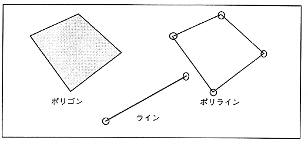

This is a polygon with 4 vertices. The difference from the sprite is that the inside of the plane surrounded by four points is filled with a single color. The one with the original picture is a sprite and the one without it is a polygon.
Polyline
This is a quadrangular shape with 4 lines connected.
Line
Draw a line with a single color between two points.
Figure 3.6 Polygon, polyline, line

● Display
Display uses a general display device, TV. Domestic and American TV standards are NTSC. Europe uses the PAL method.
* TV display is performed by reading data from the top of the frame buffer every frame (1 frame is 1/60 second).
通常 Normally 1 frame is 1 field, but interlaced 1 frame can be 2 fields, and the vertical resolution can be doubled (1 frame is 1/30 second). As shown in Table 3.5, there are double density and single density interlace (Table 3.5).